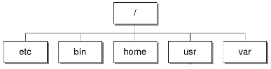

Lesson 1.1: Welcome
Linux is an open source operating system. There are two posible ways of using it: through the graphical interface (boring...) or through a command-line interface, called the shell.
You will learn how to use the shell (the black window) with this tutorial. The $ sign is called a terminal prompt.
Just to warm up type Echo and press enter.
